Apesar das chuvas, dois terços dos lençóis freáticos da França seguem abaixo do normalMalgré la pluie, deux tiers des nappes phréatiques françaises restent sous les normalesDespite the rain, two-thirds of France's groundwater remains below normal
26 NOV 2026 · Anne Lopes
Ligação traduzida em tempo real: Free lança tradução de chamadas em 10 idiomas, incluindo o português do BrasilAppels traduits en direct : Free lance la traduction des appels en 10 langues, dont le portugais du BrésilCalls translated live: Free launches call translation in 10 languages, including Brazilian Portuguese
26 NOV 2026 · Silvania Batista

Gás hilariante: governo francês lança guia para os prefeitos agirem contra o uso desviado do protóxido de azotoProtoxyde d'azote : le gouvernement lance un guide pour aider les maires à agir contre l'usage détournéLaughing gas: French government launches a guide to help mayors act against nitrous oxide misuse
25 NOV 2026 · Anne Lopes

Na aldeia natal de Salazar, Portugal abre um centro para estudar a ditadura e a resistênciaDans le village natal de Salazar, le Portugal ouvre un centre consacré à la dictature et à la résistanceIn Salazar's home village, Portugal opens a centre to study the dictatorship and the resistance
19 NOV 2026 · Anne Lopes

GTA VI chega na quinta-feira, 19 de novembro: lançamento à meia-noite na França e no Brasil, só para PS5 e Xbox SeriesGTA VI sort le jeudi 19 novembre : lancement à minuit en France et au Brésil, uniquement sur PS5 et Xbox SeriesGTA VI arrives on Thursday 19 November: midnight launch in France and Brazil, on PS5 and Xbox Series only
16 NOV 2026 · Anne Lopes

Um Comté de 24 meses do Jura é eleito o melhor queijo do mundo entre mais de 5 mil concorrentesUn Comté 24 mois du Jura sacré meilleur fromage du monde parmi plus de 5 000 concurrentsA 24-month Comté from the Jura is named the world's best cheese among more than 5,000 entries
16 NOV 2026 · Anne Lopes
O Beaujolais nouveau 2026 chega na quinta-feira, 19 de novembro: a festa do vinho novo explicadaLe Beaujolais nouveau 2026 arrive le jeudi 19 novembre : la fête du vin nouveau expliquéeBeaujolais Nouveau 2026 arrives on Thursday 19 November: the new wine festival explained
14 NOV 2026 · Silvania Batista
Assinaturas difíceis de cancelar e truques de compra online: Bruxelas propõe proibirAbonnements impossibles à résilier et pièges de l'achat en ligne : Bruxelles propose de les interdireHard-to-cancel subscriptions and online shopping tricks: Brussels proposes a ban
13 NOV 2026 · Silvania Batista
AAH e ASS: o cumul dos dois benefícios acaba em 31 de dezembro de 2026AAH et ASS : le cumul des deux allocations prend fin le 31 décembre 2026AAH and ASS: receiving both benefits ends on 31 December 2026
13 NOV 2026 · Silvania Batista
Férias de Natal 2026: aulas param em 19 de dezembro e voltam em 4 de janeiro em toda a França metropolitanaVacances de Noël 2026 : fin des cours le 19 décembre, reprise le 4 janvier dans toute la métropoleChristmas holidays 2026: schools break up on 19 December and return on 4 January across mainland France
13 NOV 2026 · Silvania Batista

A inteligência artificial vai roubar os nossos empregos? O que dizem os números, quem está mais exposto e o que isso muda para quem é imigrante na EuropaL'intelligence artificielle va-t-elle nous voler nos emplois ? Ce que disent les chiffres, qui est le plus exposé et ce que cela change pour les immigrés en EuropeWill artificial intelligence steal our jobs? What the numbers say, who is most exposed and what it changes for immigrants in Europe
10 NOV 2026 · Anne Lopes
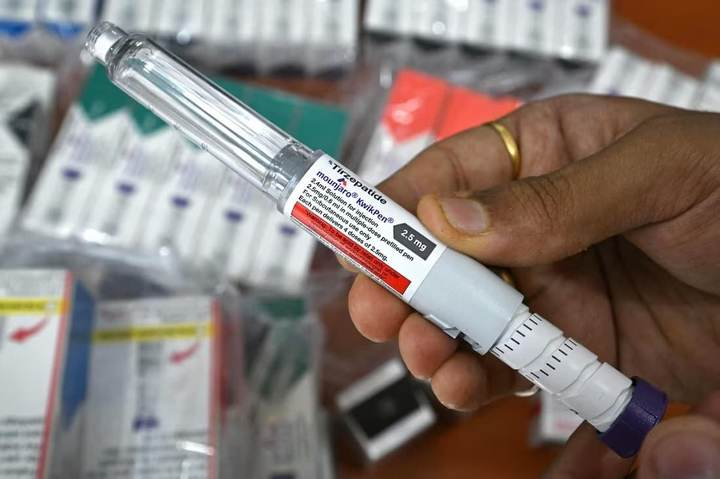
Um em cada cinco adultos na França pensa em usar remédios para emagrecer: o que a Sécurité sociale reembolsa e em que condiçõesUn adulte sur cinq en France envisage un médicament contre l'obésité : ce que rembourse la Sécurité sociale et à quelles conditionsOne in five adults in France is considering weight-loss drugs: what French social security reimburses, and under what conditions
10 NOV 2026 · Silvania Batista
Ciberataque que cortou o frio de supermercados em outubro: a França acusa uma unidade ligada aos Guardiões da Revolução do IrãCyberattaque contre les frigos des supermarchés en octobre : la France accuse une unité liée aux Gardiens de la révolution iraniensOctober cyberattack on supermarket fridges: France blames a unit linked to Iran's Revolutionary Guards
10 NOV 2026 · Silvania Batista
Alice e Maria de Fátima desaparecidasAlice et Maria de Fátima disparuesAlice and Maria de Fátima missing
25 JUL 2026 · 8 MIN · PT/FR ·
Julho de angústia: o painel dos casosJuillet d'angoisse : le panoramaA July of anguish: the case panel
25 JUL 2026 · 12 MIN · PT/FR ·
Gabriele Monteiro desaparece em LyonGabriele Monteiro disparaît à LyonGabriele Monteiro goes missing in Lyon
25 JUL 2026 · 9 MIN · PT/FR ·
Desaparecido na França: apelo da famíliaDisparu en France : l'appel de la familleMissing in France: the family's appeal
11 JUN 2026 · 5 MIN · PT/FR ·
Bruno Fernando Rego é encontrado morto em ParisBruno Fernando Rego retrouvé mort à ParisBruno Fernando Rego found dead in Paris
8 SET 2026 · 3 MIN · PT/FR/EN ·
Chef brasileiro é encontrado morto em LondresUn chef brésilien retrouvé mort à LondresBrazilian chef found dead in London
22 JUL 2026 · 6 MIN · PT/FR ·
Lisboa: detenção e proteção de menorLisbonne : arrestation et enfant protégéLisbon: arrest and protection of a minor
17 JUN 2026 · 4 MIN · PT/FR ·
Morre Sebastián Lelio, aos 52 anos: o cineasta chileno de Uma Mulher Fantástica, que levou o Oscar ao ChileMort de Sebastián Lelio à 52 ans : le cinéaste chilien d'Une femme fantastique, qui a offert l'Oscar au ChiliSebastián Lelio dies at 52: the Chilean director of A Fantastic Woman, who brought Chile an Oscar
10 NOV 2026 · Anne Lopes
Paris Photo volta ao Grand Palais de 12 a 15 de novembro e celebra os 200 anos da fotografiaParis Photo revient au Grand Palais du 12 au 15 novembre et célèbre les 200 ans de la photographieParis Photo returns to the Grand Palais from 12 to 15 November and marks 200 years of photography
9 NOV 2026 · Anne Lopes
Brasil aprova o primeiro remédio para obesidade em comprimido da família do OzempicLe Brésil autorise le premier médicament anti-obésité en comprimé de la famille de l'OzempicBrazil approves the first obesity pill from the Ozempic family
4 NOV 2026 · Robson Alves
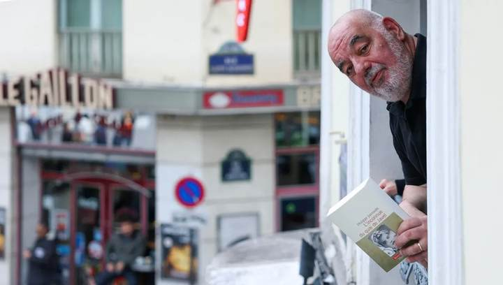
Philippe Jaenada ganha o Goncourt 2026 com a investigação de um crime de 1949 nunca resolvido em ParisPhilippe Jaenada remporte le Goncourt 2026 avec son enquête sur un crime parisien de 1949 jamais élucidéPhilippe Jaenada wins the 2026 Goncourt with his inquiry into an unsolved 1949 Paris crime
3 NOV 2026 · Anne Lopes
Cerca de 3 mil médicos em último ano de formação começam a atender em novembro, sobretudo onde faltam clínicos geraisPrès de 3 000 docteurs juniors en médecine générale commencent à consulter en novembre, surtout là où les généralistes manquentAround 3,000 final-year GP trainees start seeing patients in November, mostly where general practitioners are scarce
2 NOV 2026 · Anne Lopes
Preservativos ultrafinos de um fabricante malaio são suspensos e recolhidos na França: confira as marcas e o que fazer se você usouDes préservatifs ultra-fins d'un fabricant malaisien suspendus et rappelés en France : les marques concernées et que faire si vous les avez utilisésUltra-thin condoms from a Malaysian manufacturer suspended and recalled in France: the brands affected and what to do if you used them
1 NOV 2026 · Silvania Batista
Moradia consome mais de 40% da renda de 7,7% dos europeus; na França, a proporção é de 6,4%, cerca de 4,4 milhões de pessoasLe logement absorbe plus de 40 % du revenu de 7,7 % des Européens ; en France, la part est de 6,4 %, soit environ 4,4 millions de personnesHousing eats up more than 40% of income for 7.7% of Europeans; in France the share is 6.4%, about 4.4 million people
31 OUT 2026 · Silvania Batista
Morre Patrick Stewart, aos 86 anos: o ator shakespeariano que deu voz e rosto ao capitão Jean-Luc Picard e ao Professor XavierPatrick Stewart est mort à 86 ans : l'acteur shakespearien qui a incarné le capitaine Jean-Luc Picard et le Professeur XavierPatrick Stewart dies at 86: the Shakespearean actor who embodied Captain Jean-Luc Picard and Professor Xavier
31 OUT 2026 · Anne Lopes
Meta perde o recurso na Justiça francesa e terá de negociar "de boa-fé" o pagamento à imprensa pelo uso de notícias no Facebook e no InstagramMeta perd en appel et devra négocier « de bonne foi » la rémunération de la presse pour l'utilisation de contenus sur Facebook et InstagramMeta loses its appeal in France and must negotiate "in good faith" over paying the press for news used on Facebook and Instagram
30 OUT 2026 · Anne Lopes
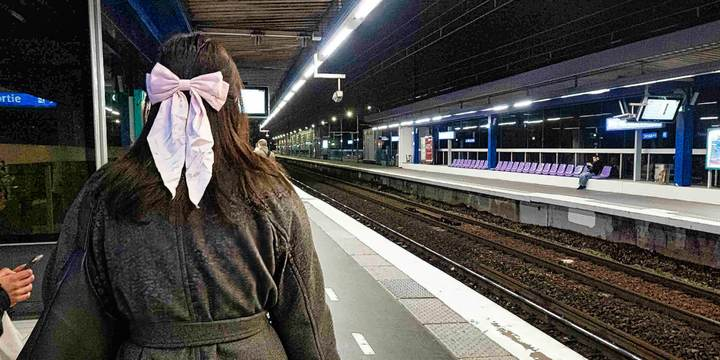
Insegurança: 43% dos adultos dizem se sentir inseguros às vezes ou com frequência nos transportes, segundo a maior pesquisa oficial de vitimização da FrançaInsécurité : 43 % des adultes se disent parfois ou souvent en insécurité dans les transports, selon la grande enquête officielle de victimationInsecurity: 43% of adults in France say they sometimes or often feel unsafe on public transport, according to the country's largest official victimisation survey
30 OUT 2026 · Silvania Batista
Estrasburgo lidera as buscas de viagem para o inverno na Europa, e Chamonix aparece em quinto lugarStrasbourg en tête des recherches de voyage pour l'hiver en Europe, Chamonix cinquièmeStrasbourg tops searches for winter travel in Europe, with Chamonix in fifth place
29 OUT 2026 · Anne Lopes
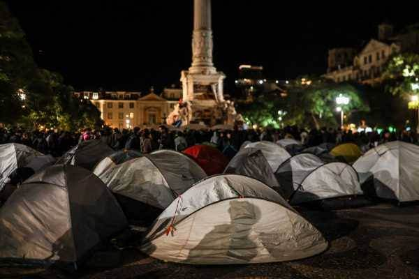
Portugal: acampamentos por moradia desmontados à força, protesto diante do parlamento e a lei do arrendamento que divide o paísPortugal : campements pour le logement démantelés par la police, manifestation devant le Parlement et une loi sur les baux qui divisePortugal: housing protest camps cleared by police, a rally outside parliament and a rental law that divides the country
29 OUT 2026 · Anne Lopes
Mois sans tabac 2026: 30 dias sem cigarro a partir de 1º de novembro, com acompanhamento gratuitoMois sans tabac 2026 : 30 jours sans cigarette dès le 1er novembre, avec un accompagnement gratuitMois sans tabac 2026: 30 days without cigarettes from 1 November, with free support
25 OUT 2026 · Silvania Batista
Funeral na França: desde 1º de outubro, a funerária é obrigada a entregar à família uma ficha com os seus direitosObsèques : depuis le 1er octobre, l'opérateur funéraire doit remettre aux familles une notice sur leurs droitsFunerals in France: since 1 October, undertakers must give families a leaflet setting out their rights
24 OUT 2026 · Silvania Batista
AAH e ASS: quem ainda recebe as duas ajudas perde o direito de acumulá-las em 1º de janeiro de 2027AAH et ASS : ceux qui touchent encore les deux allocations perdent le droit de les cumuler le 1er janvier 2027AAH and ASS: people still receiving both benefits lose the right to combine them on 1 January 2027
24 OUT 2026 · Anne Lopes
A partir de 2 de novembro, as escolas francesas vão propor aos alunos um questionário sobre violências sexuais: o que os pais precisam saberÀ partir du 2 novembre, les écoles proposeront aux élèves un questionnaire sur les violences sexuelles : ce que les parents doivent savoirFrom 2 November, French schools will offer pupils a questionnaire on sexual violence: what parents need to know
23 OUT 2026 · Silvania Batista
Papa Leão XIV não precisará de tratamento adicional contra o câncer de pulmão, dizem os médicos do VaticanoLe pape Léon XIV n'aura pas besoin de traitement supplémentaire contre son cancer du poumon, selon les médecins du VaticanPope Leo XIV will not need further treatment for lung cancer, Vatican doctors say
22 OUT 2026 · Anne Lopes
Vírus Shamonda: a França confirma o primeiro caso humano já registrado, num paciente imunodeprimido que morreu em LyonVirus Shamonda : la France confirme le premier cas humain jamais recensé, chez un patient immunodéprimé décédé à LyonShamonda virus: France confirms the first human case ever recorded, in an immunocompromised patient who died in Lyon
22 OUT 2026 · Silvania Batista
Sarampo: com o pior surto em décadas nos EUA, o Brasil reforça a vacinação, e a França conta 114 casos em 2026Rougeole : face à la pire épidémie depuis des décennies aux États-Unis, le Brésil renforce la vaccination, et la France compte 114 cas en 2026Measles: with the worst outbreak in decades in the US, Brazil steps up vaccination, and France counts 114 cases in 2026
22 OUT 2026 · Robson Alves
Airbnb proíbe anfitriões de exigir louça lavada, cama desfeita e lixo levado para fora no check-out a partir de 20 de novembroAirbnb interdit aux hôtes d'exiger vaisselle, lits défaits et poubelles sorties au départ à partir du 20 novembreAirbnb bars hosts from requiring washed dishes, stripped beds and bins taken out at checkout from 20 November
23 OUT 2026 · Anne Lopes
Telemarketing sem o seu "sim" é proibido na França desde agosto: por que o telefone ainda toca e como reagirDémarchage sans votre « oui » : interdit en France depuis août, pourquoi le téléphone sonne encore et comment réagirCold calls without your "yes" have been banned in France since August: why the phone still rings and how to respond
21 OUT 2026 · La rédaction
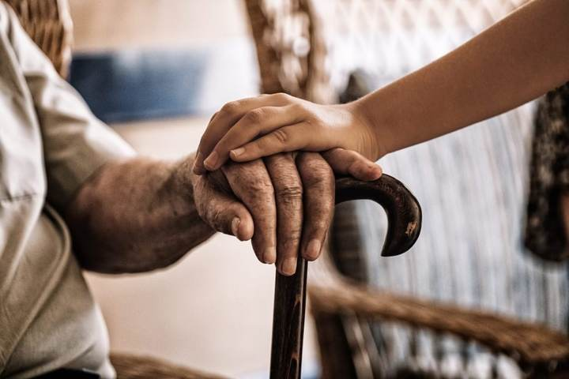
Cuidar de um familiar também conta para a aposentadoria: como funciona a AVA na FrançaS'occuper d'un proche compte aussi pour la retraite : comment fonctionne l'AVACaring for a relative also counts towards your pension: how France's AVA works
21 OUT 2026 · La rédaction
Toques de recolher localizados: Paris, Lyon, Lille e Nice fecham centros à noite, e os arrêtés dizem onde e a que horasCouvre-feux localisés : Paris, Lyon, Lille et Nice ferment des centres-villes la nuit, et les arrêtés disent où et à quelle heureLocalised curfews: Paris, Lyon, Lille and Nice close city centres at night, and the orders say where and when
19 OUT 2026 · La rédaction
Depois do 17 de outubro: novo ato convocado para sábado, 24, e o governo admite falhasAprès le 17 octobre : un nouvel acte appelé pour samedi 24, et le gouvernement reconnaît des faillesAfter 17 October: a new protest day called for Saturday 24, and the government admits failures
19 OUT 2026 · La rédaction
17 de outubro: 550 mil nas ruas, cerca de 2.400 detidos e perto de mil agentes feridos, o balanço de um sábado de violência na França17 octobre : 550 000 manifestants, près de 2 400 interpellations et près d'un millier d'agents blessés, le bilan d'un samedi de violences en France17 October: 550,000 on the streets, nearly 2,400 arrests and close to a thousand officers injured, the toll of a violent Saturday in France
19 OUT 2026 · La rédaction
Vazamento de dados: o fichário nacional dos cães e gatos e outras vinte organizações francesas na mira de piratas, e como não cair no golpeFuite de données : le fichier national des chiens et chats et une vingtaine d'autres organisations françaises visés par des pirates, et comment éviter l'arnaqueData leaks: France's national dog and cat register and some twenty other organisations targeted by hackers, and how to avoid the scam
20 OUT 2026 · La rédaction
De Mehdi Charef a Hafsia Herzi: o Musée de l'histoire de l'immigration conta 60 anos de cinema francês feito por herdeiros do MagrebeDe Mehdi Charef à Hafsia Herzi : le Musée de l'histoire de l'immigration raconte 60 ans de cinéma français porté par des héritiers du MaghrebFrom Mehdi Charef to Hafsia Herzi: Paris's immigration museum tells 60 years of French cinema made by heirs of the Maghreb
20 OUT 2026 · La rédaction
Licença médica longa: para quem tem ALD "não isenta", a indenização máxima cai de 3 anos para 1 anoArrêt maladie long : pour les ALD « non exonérantes », l'indemnisation maximale passe de 3 ans à 1 anLong-term sick leave: for "non-exempt" ALD, the maximum payout drops from 3 years to 1 year
20 OUT 2026 · La rédaction
Um ano depois do roubo no Louvre, os suspeitos estão presos, mas as joias continuam desaparecidasUn an après le vol au Louvre, les suspects sont en prison, mais les bijoux restent introuvablesA year after the Louvre heist, the suspects are in jail, but the jewels are still missing
19 OUT 2026 · La rédaction
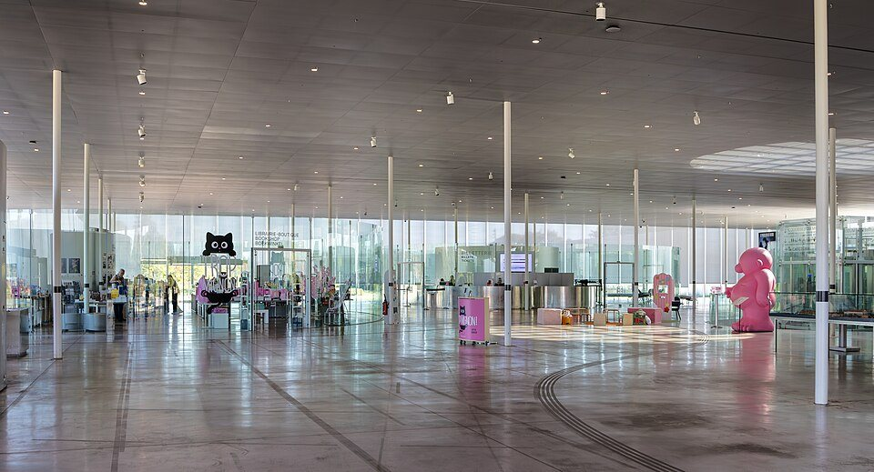
Gatinhos, bebês e Labubu: o Louvre-Lens leva a sério a arte de ser fofoChatons, bébés et Labubu : le Louvre-Lens prend au sérieux l'art d'être mignonKittens, babies and Labubu: the Louvre-Lens takes the art of cuteness seriously
18 OUT 2026 · La rédaction
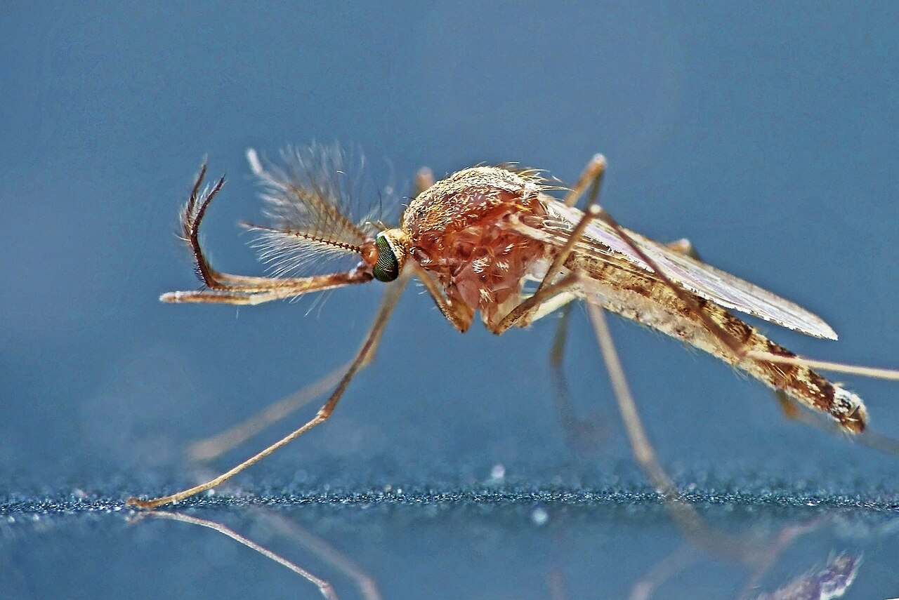
O vírus do Nilo Ocidental tem a pior temporada já registrada na Europa, e a França bate o seu recordeLe virus du Nil occidental connaît sa pire saison jamais enregistrée en Europe, et la France bat son recordWest Nile virus has its worst season on record in Europe, and France breaks its own record
15 OUT 2026 · La rédaction
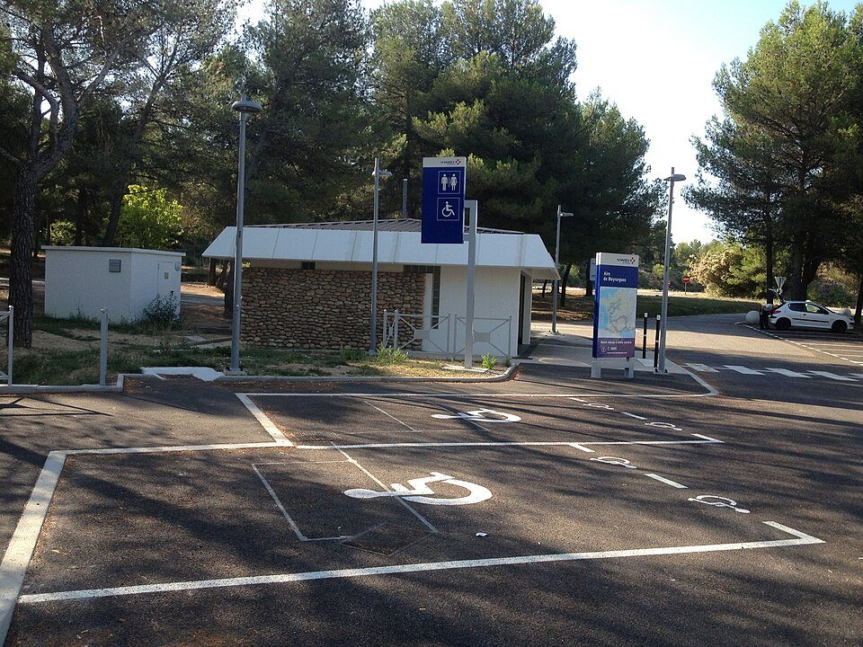
Cartão antigo de deficiência ou de estacionamento: ele deixa de valer em 31 de dezembro, e a troca pela CMI pode levar quatro mesesAncienne carte d'invalidité ou de stationnement : elle ne vaudra plus rien après le 31 décembre, et passer à la CMI peut prendre quatre moisOld disability or parking card: it stops being valid on 31 December, and switching to the CMI can take four months
15 OUT 2026 · La rédaction
Art Basel Paris 2026: 211 galerias de 41 países tomam o Grand Palais de 23 a 25 de outubroArt Basel Paris 2026 : 211 galeries de 41 pays investissent le Grand Palais du 23 au 25 octobreArt Basel Paris 2026: 211 galleries from 41 countries fill the Grand Palais from 23 to 25 October
15 OUT 2026 · La rédaction
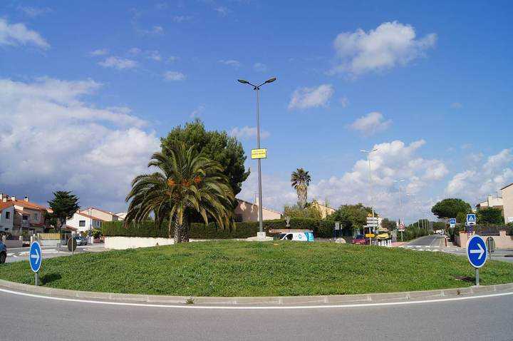
Sábado, 17 de outubro: o que se sabe sobre os protestos de inspiração "coletes amarelos" na FrançaSamedi 17 octobre : ce que l'on sait des mobilisations d'inspiration « gilets jaunes » en FranceSaturday 17 October: what we know about the Yellow Vest-style protests in France
15 OUT 2026 · La rédaction
Sem reforma, o Louvre "terá de fechar as portas ao público", alerta o presidente do museuSans rénovation, le Louvre « devra fermer ses portes au public », alerte le président du muséeWithout renovation, the Louvre "will have to close its doors to the public", warns the museum's president
14 OUT 2026 · La rédaction
Mais de mil visitas gratuitas: as Journées de l'architecture abrem prédios e canteiros de 15 a 18 de outubroPlus de mille rendez-vous gratuits : les Journées de l'architecture ouvrent bâtiments et chantiers du 15 au 18 octobreOver a thousand free events: France's Architecture Days open buildings and sites from 15 to 18 October
14 OUT 2026 · La rédaction
Lei integral contra as violências sexuais passa na Assembleia por 503 votos a 0, mas a proteção às estrangeiras ficou de foraLa loi intégrale contre les violences sexuelles adoptée à l'Assemblée par 503 voix contre 0, mais la protection des étrangères a disparuFrance's comprehensive law on sexual violence passes the Assembly 503 to 0, but protection for foreign women was dropped
14 OUT 2026 · La rédaction
Estudantes nas ruas: o que o governo prometeu, o "ato 5" de hoje e o que vem depoisLycéens dans la rue : ce que le gouvernement a promis, l’« acte V » d’aujourd’hui et la suiteStudents on the streets: what the government promised, today’s "act V" and what comes next
13 OUT 2026 · La rédaction
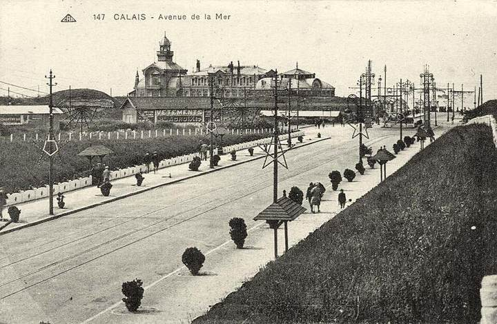
Um fio de DNA e um carro rastreado: como a polícia reencontrou os Renoir roubadosUn brin d'ADN et une voiture suivie : comment la police a retrouvé les Renoir volésA strand of DNA and a tracked car: how police found the stolen Renoirs
13 OUT 2026 · La rédaction
Mutuelle mais cara em 2027: entre 4% e 10% de alta, e o que você pode fazerMutuelle plus chère en 2027 : entre 4 % et 10 % de hausse attendue, et ce que vous pouvez faireHealth top-up insurance to cost more in 2027: rises of 4% to 10% expected, and what you can do
12 OUT 2026 · La rédaction
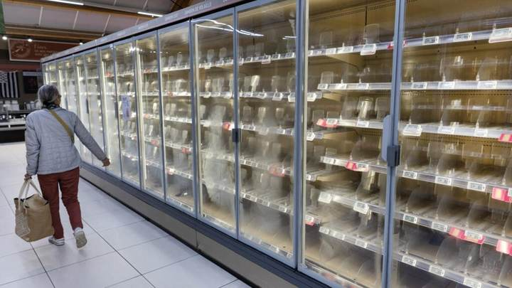
Ciberataque corta o frio de centenas de supermercados na França: o que se sabe e o que ainda nãoCyberattaque sur le froid de centaines de supermarchés en France : ce que l'on sait et ce que l'on ignoreCyberattack cuts the cold chain at hundreds of French supermarkets: what is known and what is not
12 OUT 2026 · La rédaction
Vacinação da gripe e da Covid começa em 13 de outubro, com os casos de Covid em altaLa vaccination grippe et Covid commence le 13 octobre, alors que le Covid repart à la hausseFlu and Covid vaccination starts on 13 October, with Covid cases rising
9 OUT 2026 · La rédaction
Caso suspeito de peste na Sibéria: por que a UE e a OMS pedem dados à RússiaCas suspect de peste en Sibérie : pourquoi l'UE et l'OMS demandent des données à la RussieSuspected plague case in Siberia: why the EU and WHO are asking Russia for data
9 OUT 2026 · La rédaction
Greve na TotalEnergies fecha postos e reacende o temor de falta de combustívelLa grève chez TotalEnergies ferme des stations et ravive la crainte d'une pénurieTotalEnergies strike closes stations and revives fuel-shortage fears
8 OUT 2026 · La rédaction
Aluguel turístico em Paris: multa de 110 mil euros e as regras que todo locador precisa conhecerLocation touristique à Paris : 110 000 euros d'amende et les règles que tout loueur doit connaîtreTourist lets in Paris: a 110,000-euro fine and the rules every host needs to know
7 OUT 2026 · La rédaction
Trêve hivernale: de 1º de novembro a 31 de março, ninguém é despejado nem fica sem energiaTrêve hivernale : du 1er novembre au 31 mars, pas d'expulsion ni de coupure d'énergieWinter truce: from 1 November to 31 March, no evictions and no energy cut-offs
7 OUT 2026 · La rédaction
Aides sociales: o que está em jogo na comissão que investiga o "custo real" das ajudasAides sociales : ce qui se joue dans la commission qui enquête sur le « coût réel » des aidesSocial benefits: what is at stake in the inquiry into the "real cost" of benefits
7 OUT 2026 · La rédaction
Escolas fechadas e marchas em 6 de outubro: o balanço e o que pode vir depoisÉcoles fermées et marches le 6 octobre : le bilan et ce qui pourrait suivreClosed schools and marches on 6 October: the toll and what may come next
6 OUT 2026 · La rédaction
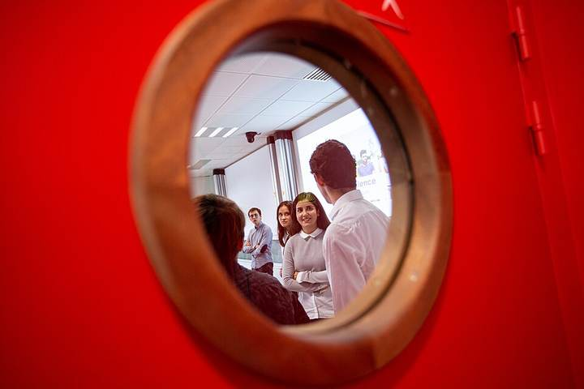
Fête de la Science 2026: dez dias de ciência de graça, em toda a França, com saborFête de la science 2026 : dix jours de science gratuite, partout en France, avec du goûtFête de la Science 2026: ten days of free science, all over France, with flavour
5 OUT 2026 · La rédaction
Outubro Rosa na França: o rastreio do câncer de mama é gratuito, não depende da nacionalidade, e salva vidasOctobre Rose en France : le dépistage du cancer du sein est gratuit, ne dépend pas de la nationalité, et sauve des viesPink October in France: breast cancer screening is free, does not depend on nationality, and saves lives
5 OUT 2026 · La rédaction
Saúde mais cara na França: o teto do que você paga do bolso sobe de 100 para 140 euros por anoLa santé plus chère en France : le plafond du reste à charge passe de 100 à 140 euros par anHealthcare costs more in France: the annual out-of-pocket cap rises from €100 to €140
1 OUT 2026 · La rédaction
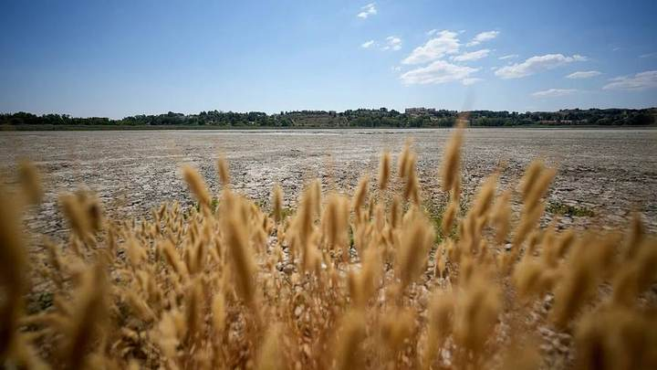
Um gás pouco conhecido afeta metade dos europeus, e o verão de 2026 piorouUn gaz méconnu touche la moitié des Européens, et l'été 2026 a aggravé la situationA little-known gas affects half of Europeans, and summer 2026 made it worse
1 OUT 2026 · La rédaction
A França passa a reembolsar coletores e calcinhas menstruais a partir de 1º de outubroLa France rembourse les cups et culottes menstruelles à partir du 1er octobreFrance starts reimbursing menstrual cups and period pants from 1 October
1 OUT 2026 · La rédaction
A França examina uma lei integral contra as violências sexuais e sexistas, e há pontos que falam direto com a imigranteLa France examine une loi intégrale contre les violences sexuelles et sexistes, avec des points qui parlent aux femmes immigréesFrance examines a comprehensive law against sexual and sexist violence, and some provisions speak directly to immigrant women
30 SET 2026 · Yan Lopes
A ágora escondida de Troia: a cidade de Homero não foi abandonada depois da guerraL'agora cachée de Troie : la cité d'Homère n'a pas été abandonnée après la guerreTroy's hidden agora: Homer's city was not abandoned after the war
30 SET 2026 · La rédaction
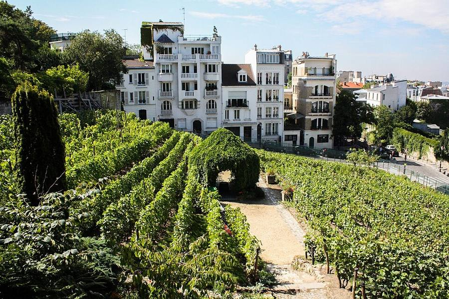
Sete festivais para viver a França em outubro: jazz, cinema, vinho e pimentSept festivals pour vivre la France en octobre : jazz, cinéma, vin et pimentSeven festivals to live France in October: jazz, cinema, wine and chilli
30 SET 2026 · La rédaction
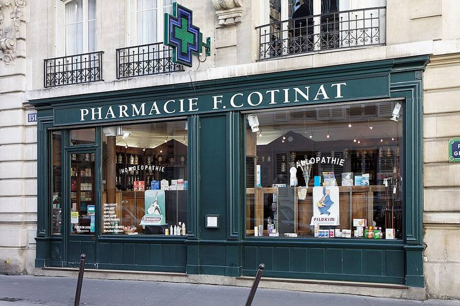
Saúde na França: 171 medicamentos deixam de ser reembolsados a 100% para doentes crônicosSanté en France : 171 médicaments ne seront plus remboursés à 100 % pour les malades chroniquesHealth in France: 171 medicines lose 100% reimbursement for chronic patients
30 SET 2026 · La rédaction
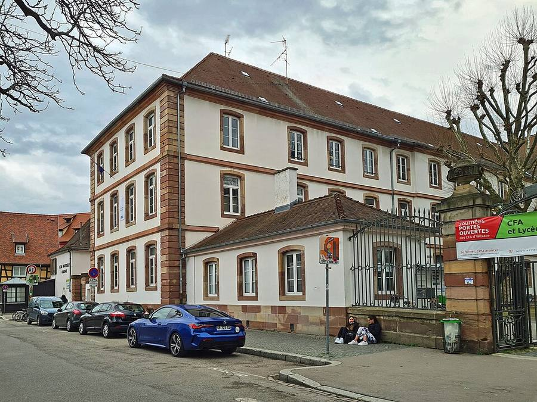
Balanço da greve de 29 de setembro: mobilização limitada, mais forte no Estado que nas outras funções públicasBilan de la grève du 29 septembre : mobilisation limitée, plus forte dans l'État que dans les autres versantsThe 29 September strike in numbers: limited turnout, stronger in the State than in the other public services
29 SET 2026 · La rédaction
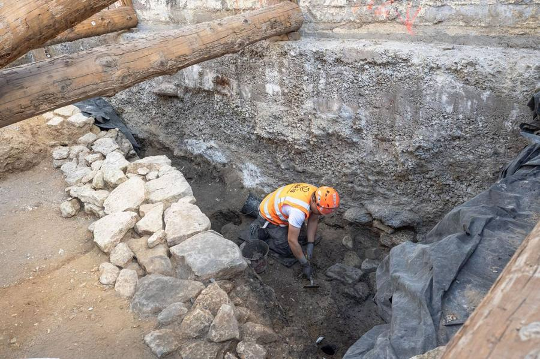
A muralha que pode revelar onde Paris nasceu, 2.000 anos atrásLe mur qui pourrait révéler où Paris est née, il y a 2 000 ansThe wall that may reveal where Paris was born, 2,000 years ago
29 SET 2026 · La rédaction
A fome de energia da IA pode desencadear um novo "boom" nuclear na Europa, diz o JP MorganLa faim d'énergie de l'IA pourrait déclencher un nouveau « boom » nucléaire en Europe, selon JP MorganThe AI energy hunger could set off a new nuclear "boom" in Europe, says JP Morgan
28 SET 2026 · La rédaction
Papa Leão XIV na França: a primeira visita em 18 anos, um alerta sobre a IA e um gesto às vítimasLe pape Léon XIV en France : la première visite en 18 ans, une mise en garde sur l'IA et un geste envers les victimesPope Leo XIV in France: the first visit in 18 years, a warning about AI and a gesture to victims
26 SET 2026 · La rédaction
Discurso do presidente Emmanuel Macron na recepção ao papa Leão XIVDiscours du président Emmanuel Macron lors de l'accueil du pape Léon XIVSpeech by President Emmanuel Macron welcoming Pope Leo XIV
26 SET 2026 · La rédaction
O que o Estado francês negocia com o islã, e o que isso muda para todas as religiões de imigrantesCe que l'État français négocie avec l'islam, et ce que cela change pour toutes les religions issues de l'immigrationWhat the French State negotiates with Islam, and what it changes for every immigrant religion
23 SET 2026 · La rédaction
A França foi o primeiro país a proibir supermercados de jogar fora comida ainda boaLa France, premier pays à interdire aux supermarchés de jeter la nourriture encore consommableFrance was the first country to ban supermarkets from throwing away food that is still good
23 SET 2026 · La rédaction
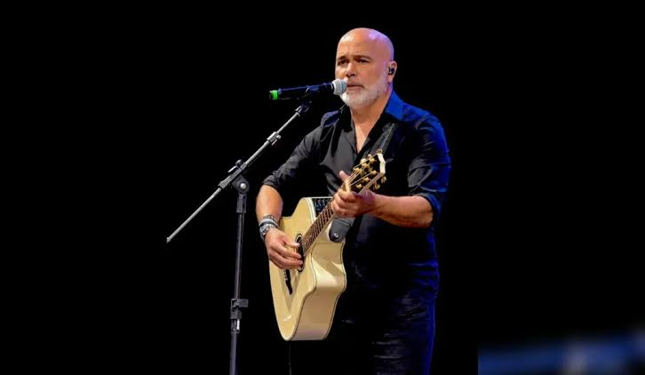
Morre Rick, da dupla Rick e Renner, aos 59 anos, em acidente de helicóptero em Santa CatarinaMort de Rick, du duo Rick et Renner, à 59 ans, dans un accident d'hélicoptère à Santa CatarinaRick, of the duo Rick e Renner, dies at 59 in a helicopter crash in Santa Catarina
23 SET 2026 · La rédaction
Duncan Sheik, a voz por trás de “Spring Awakening”, morre aos 56 anosDuncan Sheik, la voix derrière « Spring Awakening », meurt à 56 ansDuncan Sheik, the voice behind ‘Spring Awakening’, dies at 56
19 SET 2026 · 5 MIN · PT/FR · La rédaction
A UE quer barrar as redes sociais para menores de 13 anosL'UE veut interdire les réseaux sociaux aux moins de 13 ansThe EU wants to ban social media for under-13s
19 SET 2026 · 6 MIN · PT/FR · La rédaction
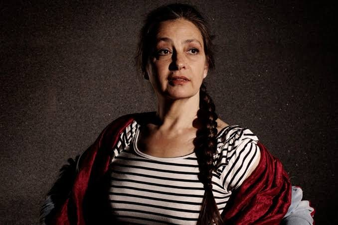
Catherine Ringer, a voz flamejante dos Rita Mitsouko, morre aos 68 anosCatherine Ringer, la voix flamboyante des Rita Mitsouko, s'éteint à 68 ansCatherine Ringer, the blazing voice of Rita Mitsouko, dies at 68
17 SET 2026 · 5 MIN · PT/FR ·
A gigante dinamarquesa do Ozempic vai usar IA para tentar descobrir novos remédiosLe géant danois de l'Ozempic va utiliser l'IA pour tenter de découvrir de nouveaux médicamentsOzempic's Danish giant will use AI to try to discover new drugs
17 SET 2026 · 4 MIN · PT/FR ·
Apple abre a era do iPhone dobrável — e o «Duo» custa quase 2.000 dólaresApple ouvre l'ère de l'iPhone pliable — et le « Duo » coûte près de 2 000 dollarsApple opens the folding-iPhone era — and the «Duo» costs nearly $2,000
10 SET 2026 · 5 MIN · PT/FR ·
Os robôs saíram da tela e entraram na cozinha: o que a IFA 2026 diz sobre a "casa do futuro"Les robots ont quitté l'écran pour entrer dans la cuisine : ce que l'IFA 2026 dit de la « maison du futur »The robots have left the screen and entered the kitchen: what IFA 2026 says about the "home of the future"
8 SET 2026 ·
A Apple promete uma "surpresa" amanhã. O rumor mais forte: o primeiro iPhone dobrávelApple promet une « surprise » demain. La rumeur la plus forte : le premier iPhone pliableApple promises a "surprise" tomorrow. The strongest rumor: the first foldable iPhone
8 SET 2026 ·
Tony Gatlif, o cineasta que fez do exílio e da estrada uma língua de cinema, morre aos 77Tony Gatlif, le cinéaste qui a fait de l'exil et de la route une langue de cinéma, meurt à 77 ansTony Gatlif, the filmmaker who turned exile and the open road into a cinematic language, dies at 77
7 SET 2026 ·
A Tapeçaria de Bayeux atravessa o Canal — pela primeira vez em quase mil anosLa Tapisserie de Bayeux traverse la Manche — pour la première fois depuis près de mille ansThe Bayeux Tapestry crosses the Channel — for the first time in nearly a thousand years
4 SET 2026 ·
A Torre Eiffel "caiu" no deserto: a obra de um francês que vira leilão de meio milhão de dólaresLa tour Eiffel « tombée » dans le désert : l'œuvre d'un Français aux enchères à un demi-million de dollarsThe Eiffel Tower "fell" in the desert: a French artist's work heading to a half-million-dollar auction
2 SET 2026 ·
461 romances numa só temporada: a rentrée literária fala de exílio461 romans en une seule saison : la rentrée littéraire parle d'exil461 novels in a single season: the literary rentrée speaks of exile
1 SET 2026 ·
A UE põe ChatGPT, Reddit e Roblox sob as regras digitais mais durasL'UE place ChatGPT, Reddit et Roblox sous les règles numériques les plus strictesThe EU puts ChatGPT, Reddit, and Roblox under the strictest digital rules
1 SET 2026 ·
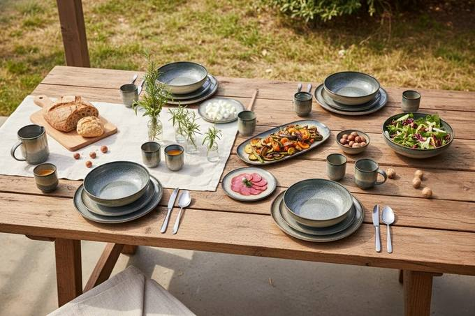
As tendências gastronómicas de 2026: o que vai chegar à sua mesaLes tendances gastronomiques de 2026 : ce qui va arriver dans votre assietteThe food trends of 2026: what's coming to your table
31 AGO 2026 ·
A voz que fez uma geração acreditar em heróis de metalLa voix qui a fait croire toute une génération aux héros de métalThe voice that made a generation believe in heroes made of metal
31 AGO 2026 ·
Céline Dion está de volta a Paris: o retorno que vai além da músicaCéline Dion est de retour à Paris : un retour qui dépasse la musiqueCéline Dion is back in Paris: a return that goes beyond the music
28 AGO 2026 ·
Brasileiras na mira do tráfico humano: a rota de exploração sexual para a FrançaDes Brésiliennes visées par la traite : la route de l'exploitation sexuelle vers la FranceBrazilian women targeted by human trafficking: the sexual exploitation route to France
28 AGO 2026 ·
O Brasil volta à disputa do Leão de Ouro em VenezaLe Brésil de retour dans la course au Lion d'or à VeniseBrazil returns to the Golden Lion race in Venice
27 AGO 2026 ·
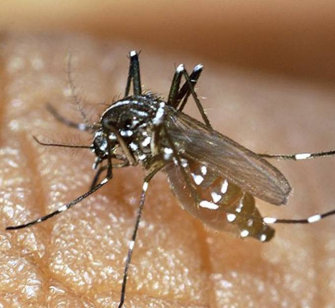
Chikungunya chega à Île-de-France: o que a comunidade precisa saberLe chikungunya arrive en Île-de-France : ce que la communauté doit savoirChikungunya reaches Île-de-France: what the community needs to know
25 AGO 2026 ·
Space Mountain vai fechar em 2027 — e voltar às origensSpace Mountain va fermer en 2027 — et revenir à ses originesSpace Mountain will close in 2027 — and return to its roots
25 AGO 2026 ·
Philippe Bouvard, a voz que fez a França rir por meio séculoPhilippe Bouvard, la voix qui a fait rire la France pendant un demi-sièclePhilippe Bouvard, the voice that made France laugh for half a century
25 AGO 2026 ·
Por que o mundo inteiro faz compras nas farmácias francesasPourquoi le monde entier fait ses courses dans les pharmacies françaisesWhy the whole world shops at French pharmacies
25 AGO 2026 ·
A "evangelização inversa": quando é a África que leva a fé à EuropaL'« évangélisation inversée » : quand c'est l'Afrique qui apporte la foi à l'Europe"Reverse evangelization": when it's Africa bringing faith to Europe
25 AGO 2026 ·
O transístor mais fino do mundo cabe numa camada de átomosLe transistor le plus fin du monde tient dans une couche d'atomesThe world's thinnest transistor fits in a single layer of atoms
25 AGO 2026 ·
Notting Hill Carnival 2026: o maior carnaval de rua da Europa toma LondresNotting Hill Carnival 2026 : le plus grand carnaval de rue d'Europe envahit LondresNotting Hill Carnival 2026: Europe's biggest street carnival takes over London
21 AGO 2026 · 6 MIN · PT/FR ·
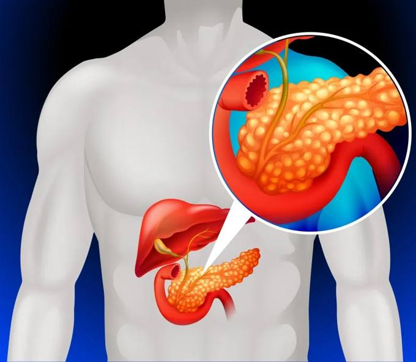
Cancro do pâncreas: um novo fármaco quase dobrou a sobrevivência num ensaio de fase 3Cancer du pancréas : un nouveau médicament a presque doublé la survie lors d'un essai de phase 3Pancreatic cancer: a new drug nearly doubled survival in a phase 3 trial
21 AGO 2026 · 6 MIN · PT/FR ·
Bonnie Tyler: a voz que parecia ter atravessado todas as tempestades cala-se aos 75 anosBonnie Tyler : la voix qui semblait avoir traversé toutes les tempêtes s'éteint à 75 ansBonnie Tyler: the voice that seemed to have weathered every storm falls silent at 75
19 AGO 2026 · 6 MIN · PT/FR ·
Duas gigantes, quase um século de arte: o Brasil despede-se de Laura Cardoso e Glória MenezesDeux géantes, près d'un siècle d'art : le Brésil fait ses adieux à Laura Cardoso et Glória MenezesTwo greats, nearly a century of artistry: Brazil bids farewell to Laura Cardoso and Glória Menezes
19 AGO 2026 · 8 MIN · PT/FR ·
Diretor do Emmy lança "Girls Just Wanna Have"Un lauréat de l'Emmy lance « Girls Just Wanna Have »Emmy-winning director releases "Girls Just Wanna Have"
26 JUL 2026 · 6 MIN · PT/FR ·
Três bombeiros mortos no combate ao fogoTrois pompiers morts face aux flammesThree firefighters killed battling the blaze
25 JUL 2026 · 11 MIN · PT/FR ·
Estudante denuncia agressão em bar na BastilhaPlainte d'une lycéenne dans un bar à BastilleStudent reports assault at a bar in Bastille
22 JUL 2026 · 7 MIN · PT/FR ·
Caso Louis: novos elementos em NarbonneAffaire Louis : nouveaux éléments à NarbonneThe Louis case: new developments in Narbonne
27 JUN 2026 · 5 MIN · PT/FR ·
Diretora de creche detida em BragaDirectrice de crèche arrêtée à BragaDaycare director arrested in Braga
11 JUN 2026 · 5 MIN · PT/FR ·
França proíbe redes sociais para menores de 15Réseaux sociaux interdits aux moins de 15 ansFrance bans social media for under-15s
22 JUL 2026 · 7 MIN · PT/FR ·
Calor sobrecarrega o sistema funerário francêsLa canicule sature le système funéraire françaisHeat overwhelms France's funeral system
21 JUL 2026 · 7 MIN · PT/FR ·
França aprova lei histórica sobre o fim da vidaLa France adopte une loi sur la fin de vieFrance passes historic end-of-life law
21 JUL 2026 · 6 MIN · PT/FR ·
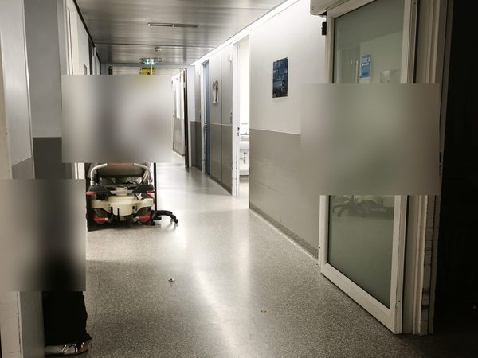
A crise silenciosa das urgências na FrançaLa crise silencieuse des urgences en FranceThe silent crisis of France's emergency rooms
21 JUL 2026 · 8 MIN · PT/FR ·
Moana chega à Ilha Fiscal com Dwayne JohnsonMoana débarque à l'Ilha Fiscal avec Dwayne JohnsonMoana comes to Ilha Fiscal with Dwayne Johnson
03 JUL 2026 · 5 MIN · PT/FR ·
Mirage 2000 sobrevoa a Essonne nesta quartaUn Mirage 2000 survole l'Essonne ce mercrediMirage 2000 flies over Essonne this Wednesday
01 JUL 2026 · 4 MIN · PT/FR ·
França vigia novo pico de calor em julhoLa France surveille un nouveau pic de chaleurFrance watches new heat peak in July
01 JUL 2026 · 6 MIN · PT/FR ·
Canícula: ~1.000 mortes a mais na FrançaCanicule : ~1 000 décès de plus en FranceHeat wave: ~1,000 additional deaths in France
29 JUN 2026 · 5 MIN · PT/FR ·
Alerta de IA leva a prisão no Espírito SantoUne alerte d'IA mène à une arrestation (Espírito Santo)AI alert leads to arrest in Espírito Santo
26 JUN 2026 · 5 MIN · PT/FR ·
O Sena reaprende a ser banhoLa Seine réapprend la baignadeThe Seine learns to be a swimming spot again
26 JUN 2026 · 5 MIN · PT/FR ·
Tragédia na canícula em CarpentrasDrame de la canicule à CarpentrasHeat wave tragedy in Carpentras
26 JUN 2026 · 5 MIN · PT/FR ·
França enfrenta nova onda de calorLa France face à une nouvelle caniculeFrance faces new heat wave
18 JUN 2026 · 4 MIN · PT/FR ·
Fête de la Musique 2026 sob o calorFête de la Musique 2026 sous la chaleurFête de la Musique 2026 in the heat
17 JUN 2026 · 4 MIN · PT/FR ·
La Caverne du Pont-Neuf: JR reinventa a ponteLa Caverne du Pont-Neuf : JR réinvente le pontLa Caverne du Pont-Neuf: JR reinvents the bridge
17 JUN 2026 · 4 MIN · PT/FR ·
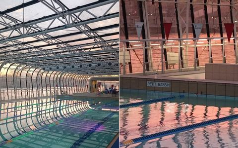
A piscina Joséphine Baker: refúgio no calor do SenaLa piscine Joséphine Baker : un refuge sur la SeineThe Joséphine Baker pool: a refuge in the Seine's heat
17 JUN 2026 · 3 MIN · PT/FR ·
Baú de Estrelas celebra Joanna no Blue Note RioBaú de Estrelas célèbre Joanna au Blue Note RioBaú de Estrelas celebrates Joanna at Blue Note Rio
16 JUN 2026 · 4 MIN · PT/FR ·
A festa do PSG, o Sena e duas mortes em ParisLa fête du PSG, la Seine et deux morts à ParisThe PSG celebration, the Seine and two deaths in Paris
JUN 2026 · 4 MIN · PT/FR ·
Uma falha básica, uma morte evitável: LimeiraUne défaillance, une mort évitable : LimeiraA basic failure, a preventable death: Limeira
13 JUN 2026 · 4 MIN · PT/FR ·
Sagrada Família: a igreja mais alta do mundoSagrada Família : plus haute église du mondeSagrada Família: the tallest church in the world
12 JUN 2026 · 4 MIN · PT/FR ·
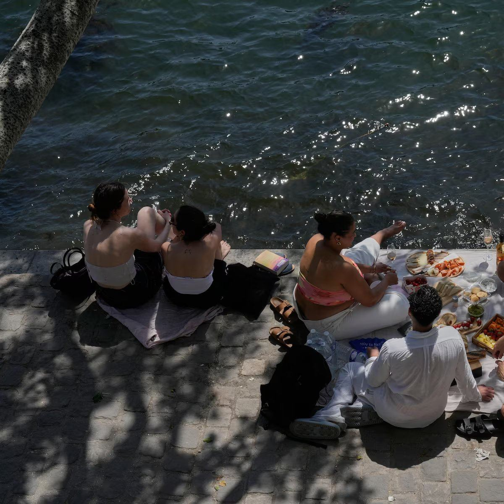
Canícula precoce: a primeira morte em ParisCanicule précoce : le premier décèsEarly heat wave: the first death in Paris
27 MAI 2026 · 11 MIN · PT/FR ·
Antibes: crianças, fósforos e um idoso graveAntibes : enfants, allumettes, drameAntibes: children, matches and a critically injured elderly man
27 MAI 2026 · 9 MIN · PT/FR ·
Paris: crise das creches em silêncioParis : crise silencieuse des crèchesParis: the daycare crisis in silence
13 MAI 2026 · 12 MIN · PT/FR ·
Paris sob vigilância: Estado em alertaParis sous vigilance : l'État en alerteParis under watch: the State on alert
12 MAI 2026 · 9 MIN · PT/FR ·
Amazônia em Paris: a floresta fala ao mundoL'Amazonie à Paris : la forêt parle au mondeThe Amazon in Paris: the forest speaks to the world
01 MAI 2026 · 13 MIN · PT/FR ·
Paris em alerta sanitárioParis en alerte sanitaireParis on health alert
12 MAI 2026 · 7 MIN · PT/FR ·
Quem controla a verdade na era da IA?Qui contrôle la vérité à l'ère de l'IA ?Who controls the truth in the age of AI?
12 MAI 2026 · 10 MIN · PT/FR ·
França endurece combate às raves ilegaisLa France durcit la lutte contre les raves illégalesFrance cracks down on illegal raves
12 Mai 2026 · 7 min · PT/FR ·
Incêndio criminoso em Lyon: três mortosIncendie criminel à Lyon : trois mortsArson in Lyon: three dead
12 Mai 2026 · 6 min · PT/FR ·
MV Hondius: franceses isolados em ParisMV Hondius : Français isolés à ParisMV Hondius: French travelers stranded in Paris
12 Mai 2026 · 7 min · PT/FR ·
AWS, data centers e a soberania digitalAWS, data centers et la souveraineté numériqueAWS, data centers and digital sovereignty
5 Mai 2026 · 7 min · PT/FR ·
A força da língua portuguesa no mundoLa force de la langue portugaise dans le mondeThe power of the Portuguese language in the world
5 Mai 2026 · 8 min · PT/FR ·